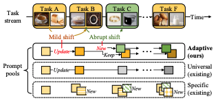
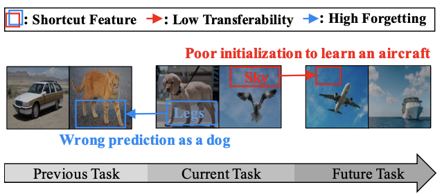
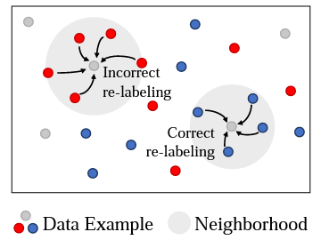
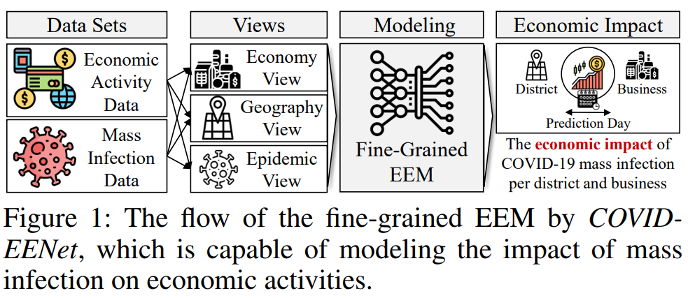
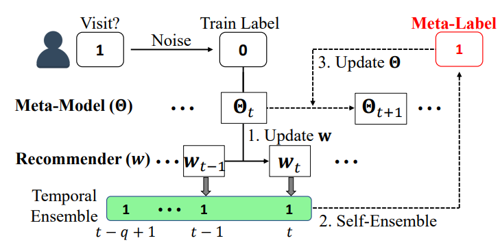
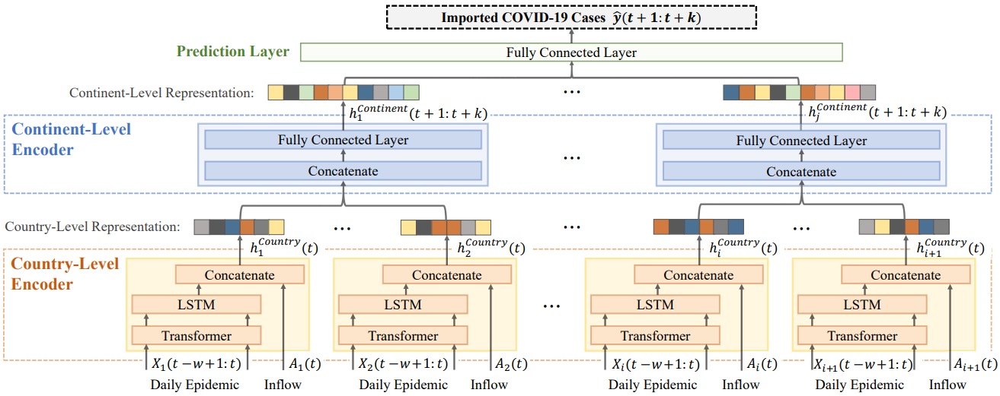

|
Doyoung Kim
KAIST, School of Computing
E3-2442, 291 Daehak-ro, Yuseong-gu Email: dodokimxkxkxk@kaist.ac.kr / doyo94550754xkxkxk@gmail.com |
May 2024: A research paper on 'continual learning' was accepted at ICML 2024.
Jan 2024: A research paper on 'continual learning' was accepted at AAAI 2024.
Dec 2023: A research paper on 'data pruning' was accepted at NeurIPS 2023.
Jan 2022: A research paper on 'spatio-temporal forecasting' was accepted at AAAI 2022.
Publications Google scholar profile|  | D. Kim, S. Yoon, D. Park, Y. Lee, H. Song, JG. Lee. One Size Fits All for Semantic Shifts: Adaptive Prompt Tuning for Continual Learning. International Conference on Machine Learning (ICML) 2024. |
|  | D. Kim, D. Park, Y. Shin, H. Song, JG. Lee. Adaptive Shortcut Debiasing for Online Continual Learning. The AAAI Conference on Artificial Intelligence (AAAI) 2024. |
|  | D. Park, S. Choi, D. Kim, H. Song, JG. Lee. Robust Data Pruning under Label Noise via Maximizing Re-labeling Accuracy. Annual Conference on Neural Information Processing Systems (NeurIPS) 2023. To Appear |
|  | D. Kim, H. Min, Y. Nam, H. Song, S. Yoon, M. Kim, JG. Lee. COVID-EENet: Predicting Fine-Grained Impact of COVID-19 on Local Economies . The AAAI Conference on Artificial Intelligence (AAAI) 2022. Selected for Oral Presentation. [pdf] [code] |
|  | M. Kim, H. Song, D. Kim, K. Shin, JG. Lee. PREMERE: Meta-Reweighting via Self-Ensembling for Point-of-Interest Recommendation. The AAAI Conference on Artificial Intelligence (AAAI) 2021. Selected for Oral Presentation. [pdf] [code] |
|  | M. Kim, J. Kang, D. Kim, H. Song, H. Min, Y. Nam, D. Park, JG. Lee. Hi-COVIDNet: Deep Learning Approach to Predict Inbound COVID-19 Patients and Case Study in South Korea . International Conference on Knowledge Discovery and Data Mining (KDD) 2020. [pdf] [code] |
Services
Reviewer for ICML, AAAI, NeurIPS, ICLR, CVPR, ICCV, ECCV since 2022
© 2022 Doyoung Kim Thanks Dr. Hwanjun Song and Dr. Ce Liu for the template.